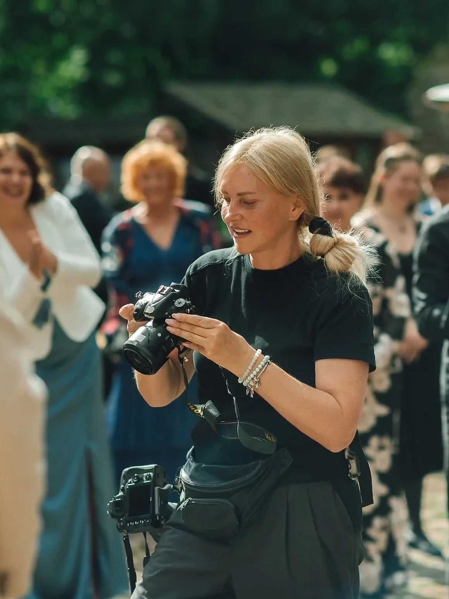

Ein Auge für das Echte.
Seit 2012 fange ich als Hochzeitsfotografin in Kassel die stille Poesie zwischen den Momenten ein. Mein Weg als Autodidaktin hat mich gelehrt, nicht nur zu sehen, sondern wirklich zu fühlen, was eure Geschichte besonders macht.

Meine Reise begann mit der Neugier und wurde zur Berufung.
2012 habe ich angefangen, Hochzeiten zu fotografieren — als Autodidaktin, ohne Studium, einfach mit Kamera und Neugier. Seitdem habe ich bei jeder Hochzeit dazugelernt. Heute arbeite ich von Kassel und Göttingen aus und begleite Paare in ganz Hessen und Niedersachsen.
Über 200 Paare haben mir ihren Tag anvertraut. Was dabei geblieben ist: ein Stil, der Trends überdauert. Ehrlich. Warm. Lebendig. Keine gestellten Posen — nur echte Geschichten.

"Authentizität ist meine Sprache."
Ich inszeniere nicht — ich beobachte und halte die leisen Momente fest, die euren Tag so einzigartig machen. Meine Fotografie ist eine Einladung, ganz ihr selbst zu sein — ungeschönt, verletzlich und wunderschön.
Ein zeitloser Ansatz.
Während Trends kommen und gehen, suche ich als Hochzeitsfotografin nach dem, was wirklich bleibt und eure Geschichte authentisch erzählt. Mein Bearbeitungsstil ist inspiriert von der analogen Filmfotografie — warme Hauttöne, natürliche Kontraste und ein Hauch von Nostalgie, der eure Bilder über die Jahre hinweg zeitlos macht.
- Analoger Film-Look
- Empathische Begleitung
- Editorial Storytelling
Bereit, eure Geschichte zu erzählen?
Ich freue mich darauf, euch und eure Geschichte kennenzulernen und gemeinsam etwas Einzigartiges zu schaffen, das euren wichtigsten Tag für immer lebendig hält.
Kontakt Aufnehmen